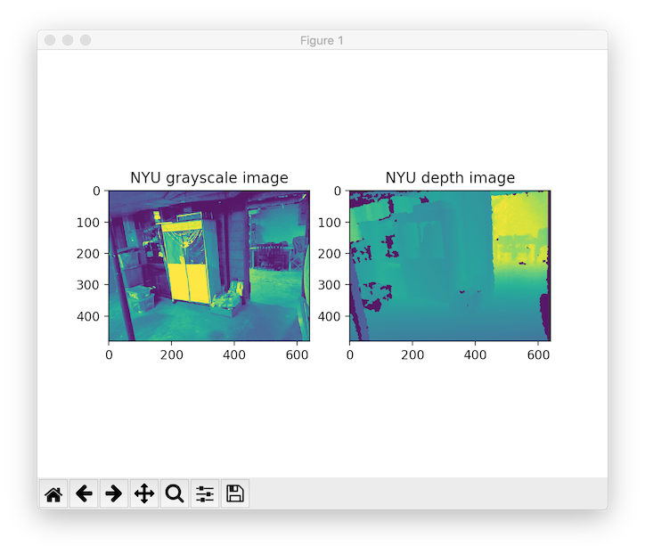
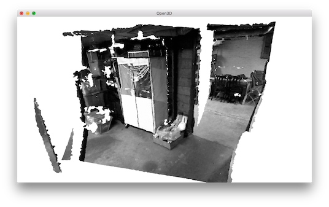

NYU dataset¶
This tutorial reads and visualizes an RGBDImage from the NYU dataset [Silberman2012].
5 6 7 8 9 10 11 12 13 14 15 16 17 18 19 20 21 22 23 24 25 26 27 28 29 30 31 32 33 34 35 36 37 38 39 40 41 42 43 44 45 46 47 48 49 50 51 52 53 54 55 56 57 58 | # examples/Python/Basic/rgbd_nyu.py
import open3d as o3d
import numpy as np
import re
import matplotlib.image as mpimg
import matplotlib.pyplot as plt
# This is special function used for reading NYU pgm format
# as it is written in big endian byte order.
def read_nyu_pgm(filename, byteorder='>'):
with open(filename, 'rb') as f:
buffer = f.read()
try:
header, width, height, maxval = re.search(
b"(^P5\s(?:\s*#.*[\r\n])*"
b"(\d+)\s(?:\s*#.*[\r\n])*"
b"(\d+)\s(?:\s*#.*[\r\n])*"
b"(\d+)\s(?:\s*#.*[\r\n]\s)*)", buffer).groups()
except AttributeError:
raise ValueError("Not a raw PGM file: '%s'" % filename)
img = np.frombuffer(buffer,
dtype=byteorder + 'u2',
count=int(width) * int(height),
offset=len(header)).reshape((int(height), int(width)))
img_out = img.astype('u2')
return img_out
if __name__ == "__main__":
print("Read NYU dataset")
# Open3D does not support ppm/pgm file yet. Not using o3d.io.read_image here.
# MathplotImage having some ISSUE with NYU pgm file. Not using imread for pgm.
color_raw = mpimg.imread("../../TestData/RGBD/other_formats/NYU_color.ppm")
depth_raw = read_nyu_pgm("../../TestData/RGBD/other_formats/NYU_depth.pgm")
color = o3d.geometry.Image(color_raw)
depth = o3d.geometry.Image(depth_raw)
rgbd_image = o3d.geometry.RGBDImage.create_from_nyu_format(color, depth)
print(rgbd_image)
plt.subplot(1, 2, 1)
plt.title('NYU grayscale image')
plt.imshow(rgbd_image.color)
plt.subplot(1, 2, 2)
plt.title('NYU depth image')
plt.imshow(rgbd_image.depth)
plt.show()
pcd = o3d.geometry.PointCloud.create_from_rgbd_image(
rgbd_image,
o3d.camera.PinholeCameraIntrinsic(
o3d.camera.PinholeCameraIntrinsicParameters.PrimeSenseDefault))
# Flip it, otherwise the pointcloud will be upside down
pcd.transform([[1, 0, 0, 0], [0, -1, 0, 0], [0, 0, -1, 0], [0, 0, 0, 1]])
o3d.visualization.draw_geometries([pcd])
|
This tutorial is almost the same as the tutorial processing Redwood dataset, with two differences. First, NYU images are not in standard jpg or png formats. Thus, we use mpimg.imread to read the color image as a numpy array and convert it to an Open3D Image. An additional helper function read_nyu_pgm is called to read depth images from the special big endian pgm format used in the NYU dataset. Second, we use a different conversion function create_rgbd_image_from_nyu_format to parse depth images in the SUN dataset.
Similarly, the RGBDImage can be rendered as numpy arrays:
{kind=link}
Or a point cloud:
{kind=link}